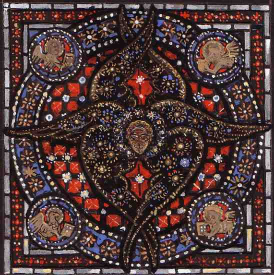

La Russia, l’Eurasia, il multipolarismo
 La Russia di oggi non è l’URSS di ieri, e nemmeno quella più remota dell’impero degli Zar. Ma se il presente non è schiacciato sul passato prossimo, ha comunque una storia. Intervista con Aleksandr Dugin
La Russia di oggi non è l’URSS di ieri, e nemmeno quella più remota dell’impero degli Zar. Ma se il presente non è schiacciato sul passato prossimo, ha comunque una storia. Intervista con Aleksandr Dugin
Piotr Merkurj: la pittura della luce
 Un pittore russo tra Oriente e Occidente. Pensare le icone, dipingere nel pensiero. Luce e materia, forma e colore, spiritualità dell’arte e autonomia della cultura.
Dante domestico, Dante musulmano

Del perché Dante può ancora insegnare qualcosa a tutti.
Dante, pare strano ma occorre ricordarlo, stabilisce le coordinate del dire poetico italiano e della sua lingua, segnando la propria preminenza nella cultura del Paese nonché nella sua memoria politica e sociale. La considerazione del suo operato è inevitabile per chiunque, in qualsiasi modo, abbia a che fare con la poesia o con l’Italia. Dante appare a noi domestico, lo chiamiamo sempre per nome e mai per cognome e rappresenta un patrimonio inalienabile delle nostre case. Non può nemmeno mancare nella considerazione dei media che fagocitano ogni cosa e che, in maniera ormai più pervasiva della scuola, ne permettono la diffusione, per quanto a volte soltanto nel nome - ma si sa, basta la parola, dicono… E così va a finire che Dante, insieme alla Costituzione e alla magistratura, rappresenta il feticcio più nominato e abusato dagli italiani.
Brindisi mancati a Berlino

Le origini di Superman, la storia di Metropolis, l’amore perduto di Adolf Hitler. Una separazione sullo scenario di una città separata.
Montale, Kavàfis e le attese capovolte
 Cristiano Luciani: disincanto, ironia, lingua fluida, miti rovesciati e tempo non lineare in Montale e Kavàfis.
Cristiano Luciani: disincanto, ironia, lingua fluida, miti rovesciati e tempo non lineare in Montale e Kavàfis.
Strade di Fener
 Il quartiere del Fener tra Istanbul e il resto del mondo.
Il quartiere del Fener tra Istanbul e il resto del mondo.
Profilazioni predittive e comportamenti elettorali
 I privati hanno il monopolio tecnologico sugli strumenti della comunicazione pubblica. E il nostro immaginario è stato colonizzato. Riuscirete ora a mettere un mipiace? Un’analisi di Renato Curcio.
I privati hanno il monopolio tecnologico sugli strumenti della comunicazione pubblica. E il nostro immaginario è stato colonizzato. Riuscirete ora a mettere un mipiace? Un’analisi di Renato Curcio.

Twink. Un batterista underground tra psichedelia e punk

L’arte delle banane

Spazi vuoti. La mezzaluna tra il Bosforo e il lago di Nemi

I folletti dei Castelli Romani: il lénghelo e gli altri


Trump, Taylor Swift e le equazioni degli atti inconsulti


Ucraina: il confine stracciato dell’Eurasia

Dante domestico, Dante musulmano
Pessimus virus
L’ironia della sorte


Vedere, scrivere, forse cadere (da una finestra, dopo lungo silenzio)

Grand Tour BookWineBar: finalmente si apre
Scrittori che non scrivono
Intellettuale chi?
ə e ∗: generi e grafemi. Un intervento della Crusca e una nota sull’aleph
L’invisibile e lo specchio. Note sulla poesia di Serafino Murri e la pittura di Mario La Carrubba

Aggredior virus. Intervista con l’autore
.jpg)
Pablo Eucharren: l’arte quale truffa

La crudele realtà

San Rocco prima e dopo il Covid

Sospeso e inafferrabile: il tempo al tempo della pandemia

Profilazioni predittive e comportamenti elettorali


Gerusalemme: guida possibile alla terra negata

Le nature spirituali di Enrico Fraccacreta

Premonizioni del Settantasette

Colpo di Stato in Russia

Piotr Merkurj: la pittura della luce

Lotta armata, giustizia pop, varia letteratura

Catalogna. La costruzione di un regno inesistente

I giornalisti americani e il giornalismo fascista

Affinità e divergenze tra fascismi e New Deal

Historia di una sbronza

Contro i vaccini. I perché di un’opinione

Il bambino senza tempo

Montale, Kavàfis e le attese capovolte

Italia: terra di transito obbligatorio e permanente


Brindisi mancati a Berlino

La città mai vista

Il cuore del vuoto

Ritorno a Frascati. La felicità del non più troppo giovane Goethe

Etica del ribelle. La scienza e la storia tra fratture e continuità


Gerardo Marotta in tre atti

La Russia, l’Eurasia e il multipolarismo

Miles Davis e Ferruccio Busoni: lontane risonanze

Il noir (e il giallo e il thriller) come arte

Aspetti etici del Testamento biologico


Trump no-global contro il mondo

Una Roma senza Torri

Dimettersi da frocio


Animali e uomini tra malattia e guarigione

Le avventure di Saro e Giambologna

Il digitale ha distrutto la verità

Bob Dylan. Poetica espressiva e canzone americana

Momenti della fine: tre religioni a confronto

La “Theory”: una filosofia sintetica low cost

Donne e uomini: pregiudizi e dati di fatto

Fidel Castro e l’eredità del socialismo

Una democrazia critica. Note su Habermas


Berlino dopo l’unione

Il continuo ritorno della Dama Bianca

Brian Eno, la guerra in Palestina e la perdita della civiltà


Un vuoto nel cielo

La storia e i giorni. Le bombe su Frascati e la distruzione di Tuscolo

Il burkini e lo scandalo del coprirsi


Cose turche

Nuova Chiesa e nuova politica

Il giorno in cui combinammo qualcosa di buono

Il contagio della violenza

Brexit: come perdere contro se stessi

Storie dalla Jihad

Il disgusto della democrazia

Hikikomori nella prospettiva di Leibniz

Gli spacciatori di felicità

Philip Dick il filosofo mascherato

Il sottoproletariato cognitivo in Italia

Bisogna saper vincere


Jeeg Robot contro i Kattivi

Proposte didattiche per una scuola meticcia

Mein Kampf per tutti

Gender theories. Riflessioni a margine

Scorre il sangue, fertile la terra: la Pasola di Sumba

Manicomio Italia: un quadro clinico

Il neoliberismo: l’ideologia senza nome

Tutti contro il TTIP. E poi?

Un rosario per Pannella


Colonizzazione dell’immaginario e controllo sociale

È tutto invano ciò che un uomo vano fa per bisogno

Dark Reign: politica e religione tra i fumetti e la gnosi

Chi paga per la condivisione?


L’arte egocentrica mondiale sta uccidendo l’arte

L’omicidio Varani e le nuove identità del male

Indagini scientifiche: il giallo e la matematica

Rovine d’Europa


Orizzonti editoriali e mondo digitale

Variazioni della differenza: Derrida e Coleman

Unioni incivili e strutture parentali: dopo Lévi-Strauss

Il codice del mondo

La luce, il paesaggio e il confine in Francesco Biamonti

Il largo sguardo d’Europa e la poesia di Faraòn Meteosès
L’Europa e i limiti della retorica antitedesca

L’ideologia del presente

Cinque questioni su David Bowie
Le guerre di Marcantonio Colonna e lo Statuto di Frascati del 1515

Cul de sac

Fantasmi a Berlino

Istanbul: diario di bordo

Cocktail bulgaro

La Grecia, l’Europa e i conti della serva

Sguardi obliqui. Bologna e la pittura
Montale prima e dopo il novecento

Siamo morti da sempre

I colori del noir

Charlie Hebdo e la satira integrale

Le parole del sesso taciuto

Il Premio Frascati: la poesia e la provincia del secolo passato

Il tetto sopra Berlino

Halloween dietro le quinte

Il tradire degli eventi

Padre Padrino

La palude letteraria

La popsophia, i greci e la critica del presente

De neolingua

Strade di Fener

Virus

L’uomo e la gallina

La Siria, la guerra e l’informazione
Il cavaliere, le armi e gli amori (o giù di lì)

La clonazione dalle pecore a Dio (passando per Berlusconi)

Maschile e femminile: sessualità e scrittura nel “Basso impero”

I tre pontificati di Benedetto IX

Poesie per un giorno di primavera

«Conscientia mea»: Ratzinger e noi

Lacrime e barche. Sanremo e la politica

Declinazioni dell’autore

Dentro le foibe

Il tredicesimo mese. Aforismi
Contingenze del paesaggio tra Grizzana Morandi e la metropoli globale

Leopardi e Manzoni: il degrado dell’Italia e della sua letteratura

Soundcentral: come divertirsi a Kabul

Al Qaeda network. Il fondamentalismo islamico e le strategie reticolari

Undici volte 11 settembre

Bologna e le dodici chiavi dello zodiaco. Porta Lame, in Fa maggiore
Comunicare è vivere?

L’Italia ha vinto

Le colpe di Batman. L’informazione, i fumetti e le stragi

Spiragli sull’Europa. Quattro poesie.

Musica e contemporanei

2012: apocalissi su misura

Facebook, la borsa e le relazioni

Quando passa Nuvolari. Sulla morte di Lucio Dalla e il sesso degli angeli

Monopoli e Risiko! Guerre globali e crisi finanziarie

La natura dopo la natura. Montale: la perdita dell’innocenza e la conquista del linguaggio

Possedimenti e memorie della perduta città di Tuscolo
Ballate e danze dal Basso Impero

Zone di transito

Il pianeta dei famosi